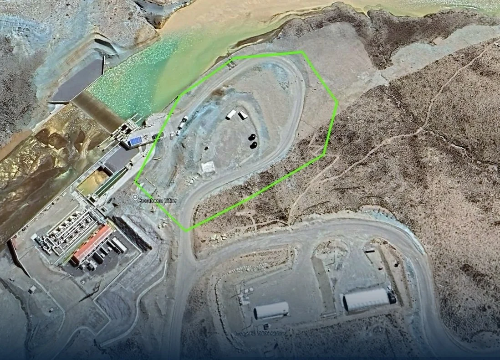
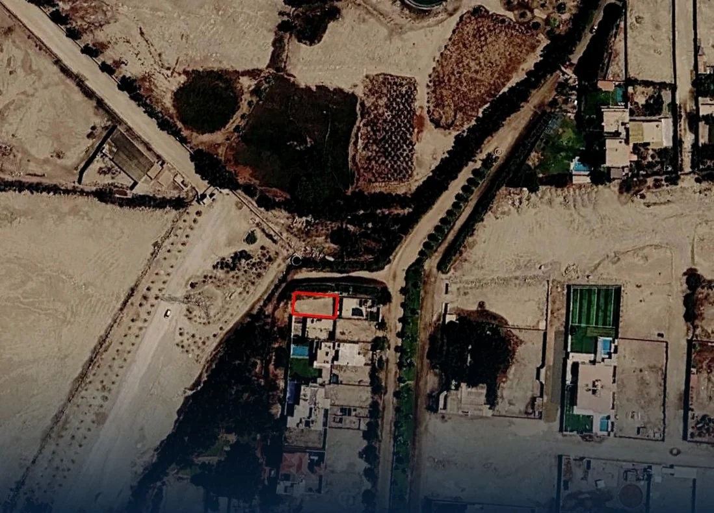
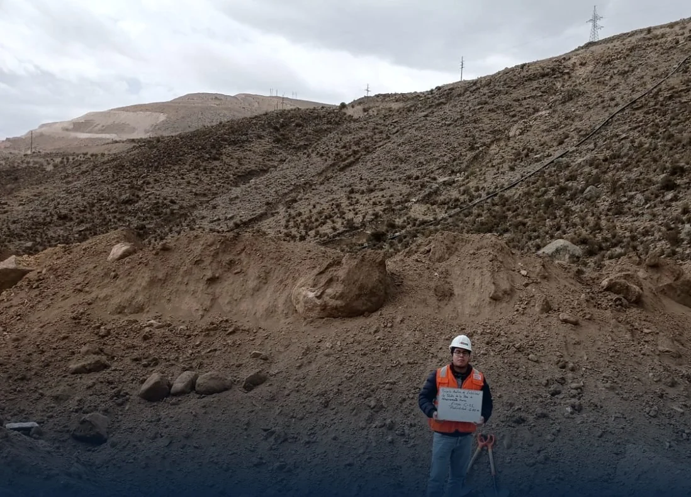

CulminadoTrade-off · ingeniería conceptual
CulminadoTrade-off · ingeniería conceptualUM Betaspata · Yanahuaya, Sandia, Puno
Trade-off de relaveras, canteras y desmonteras
Puka Mani E.I.R.L.
Ver alcance técnico
04 / Portafolio técnico
Conoce nuestra experiencia en ingeniería minera, geotecnia, hidráulica e infraestructura, organizada según el avance de cada proyecto.
Nuestra experiencia
Explora los proyectos culminados y en proceso. Filtra por estado o especialidad y selecciona una ficha para conocer su alcance técnico.
7 proyectos en el portafolio
Experiencia desarrollada
CulminadoTrade-off · ingeniería conceptualUM Betaspata · Yanahuaya, Sandia, Puno
Puka Mani E.I.R.L.
Ver alcance técnico
CulminadoHidráulica · geotecniaUM Quellaveco · Moquegua
SINNENS S.R.L.
Ver alcance técnico
CulminadoGeotecnia · cimentacionesCieneguilla · Lima
Proyecto residencial privado
Ver alcance técnicoTrabajos en desarrollo
 En procesoGestión de instalaciones
En procesoGestión de instalacionesUM Untuca · Quiaca, Sandia, Puno
Cori Puno S.R.L.
Ver alcance técnico En procesoEstabilidad física · relaves
En procesoEstabilidad física · relavesUM Puka Mani · Puno
Consorcio Minero Horizonte S.R.L.
Ver alcance técnico En procesoEstabilidad física · relaves
En procesoEstabilidad física · relavesUM Untuca · Puno
Consorcio Minero Horizonte S.R.L.
Ver alcance técnico
En procesoHidráulica · geotecniaUM Quellaveco · Moquegua
SINNENS S.R.L.
Ver alcance técnicoNo hay proyectos con esos criterios. Prueba otra búsqueda.
Las fichas recogen los alcances incluidos en el brochure ALTIVIA 2026. Algunas imágenes satelitales provienen de Google Earth y se identifican en el detalle de cada proyecto. Su difusión pública debe contar con autorización del titular correspondiente.
Experiencia aplicada
Podemos evaluar el alcance y las necesidades específicas de tu operación.

Registro
Actividades relacionadas
Los proyectos se presentan según su estado reportado y la información técnica disponible.
Conversemos